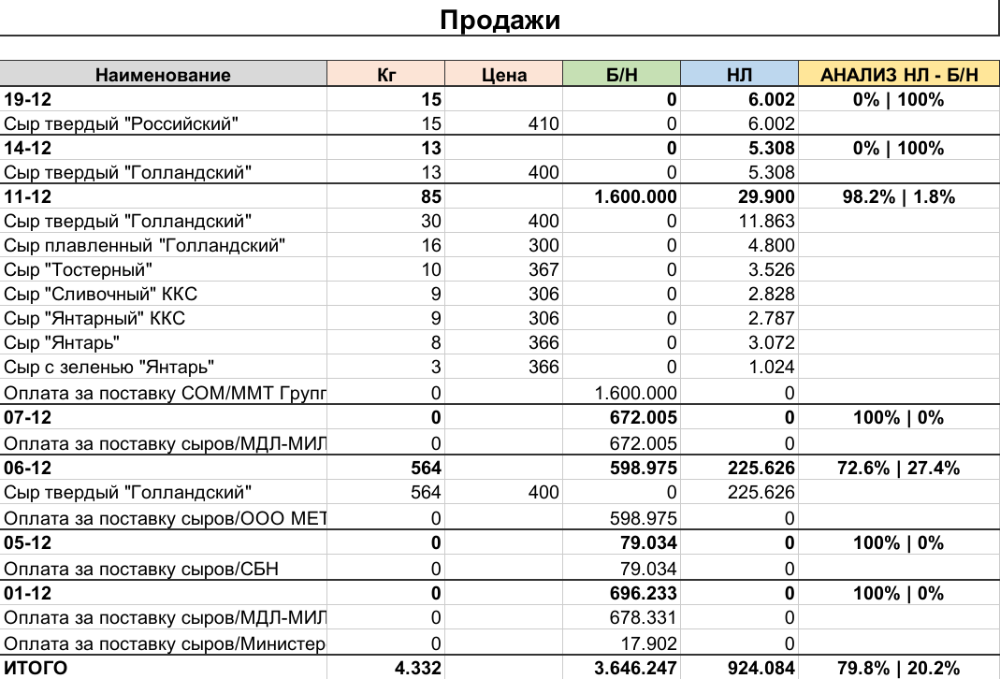

Beautiful export to Excel (xlsx)
openxlsx
This article briefly describes the functions of the openxlsx package.
Below is an example of the interaction of functions and the final result of exporting a table from R → xlsx
Libraryes and styles
library(openxlsx)
## --- Colors
gray <- createStyle(fgFill = '#d9d9d9')
green <- createStyle(fgFill = '#c6e0b4')
red <- createStyle(fgFill = '#f9a1a1')
blue <- createStyle(fgFill = '#bdd7ee')
yellow <- createStyle(fgFill = '#ffe699')
ros <- createStyle(fgFill = '#fce4d6')
border <- createStyle(fgFill = '#333333')
## --- Styles
st_bord <- createStyle(numFmt = "#,##0",
border = 'TopBottomLeftRight',borderColour = '#cccccc')
st_head <- createStyle(textDecoration = "bold", halign = "center",
border = 'TopBottomLeftRight',borderColour = border)
st_bot <- createStyle(textDecoration = 'bold',border = "top",
borderColour = border,borderStyle = "medium")
st_name <- createStyle(halign = "center", textDecoration = 'bold',
fontSize = 16, border = 'TopBottomLeftRight',
borderColour = border, borderStyle = 'medium')
st_bold <- createStyle(textDecoration = 'bold',border = "left",
borderColour = border,borderStyle = "medium")Workbook and Options
We create a workbook (an object in RAM) and a sheet in this workbook named Sales, to which we apply several options:
- orientation = ‘portrait’ - specifies the paper orientation (an option for printing on paper)
- pageSetup – for page margin (helps fit more information on the page when printing on paper)
## Create a book
wb <- createWorkbook()
## Adding a Sheet to the xlsx Workbook
addWorksheet(wb, sheetName = "Sales", orientation = 'portrait', gridLines = FALSE)
## Setting Margins
pageSetup(wb, "Sales", left = 0.25, top = 0.25, right = 0.25,bottom = 0.25)Writing and Customization
## Writing Data to the xlsx Sheet
writeData(wb, 'Sales', "Sales")
## Merging Cells
1mergeCells(wb, sheet = "Sales", cols = 1:length(fin_sales), rows = 1)
2addStyle(wb, 'Sales', st_name, 1, 1:length(fin_sales), stack = TRUE)
writeData(wb, 'Sales', fin_sales, startRow = 3)
addStyle(wb, 'Sales', st_head, 3, 1:length(fin_sales),
gridExpand = TRUE, stack = TRUE)- 1
-
merges cells (the range of merged cells is determined automatically)
cols = 1:length(fin_sales)
- 2
-
applies the “st_name” style to the specified range
## Set Column Widths
1setColWidths(wb, "Sales", cols = 1, widths = 25)
addStyle(wb, 'Sales', st_bord, 4:(nrow(fin_sales)+3),
1:length(fin_sales), stack = TRUE, gridExpand = TRUE)
## Apply the st_bot Style to Cells in the Column with Data
addStyle(wb, 'Sales', st_bot, (which(!is.na(temp_sales$PROC))+3),
1:length(temp_sales), stack = TRUE, gridExpand = TRUE)
addStyle(wb, 'Sales', st_bot, nrow(fin_sales)+3, 1:length(fin_sales), stack = TRUE)
addStyle(wb, 'Sales', createStyle(halign = "center"),
3:(nrow(fin_sales)+3), length(fin_sales), stack = TRUE, gridExpand = TRUE)
setColWidths(wb, "Sales", cols = length(fin_sales), widths = 18)
addStyle(wb, 'Sales', gray, 3, 1, stack = TRUE)
addStyle(wb, 'Sales', ros, 3, c(2,3), stack = TRUE, gridExpand = TRUE)
addStyle(wb, 'Sales', green, 3, 4, stack = TRUE)
addStyle(wb, 'Sales', blue, 3, 5, stack = TRUE)
addStyle(wb, 'Sales', yellow, 3, 6, stack = TRUE)- 1
- setColWidths - sets the width of the column
Result

Conclusion
This method of saving to xlsx is, on one hand, “verbose,” but on the other hand, it is very flexible in customization, allowing you to write/apply styles down to the individual cell.
If a similar report is generated regularly, where only the data is updated, this approach makes sense. In the long term, it will pay off in subsequent iterations of report generation.